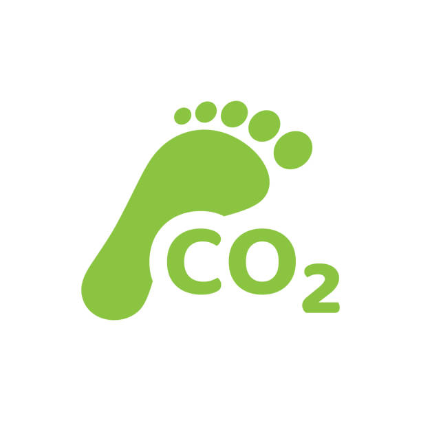
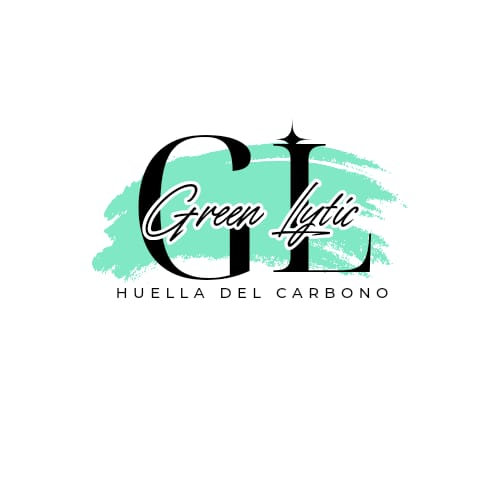

VENTAJA
Una calculadora ecológica, fabricada con materiales reciclables y alimentada por energía solar, reduce el consumo de baterías desechables, disminuyendo su impacto ambiental.
"Aprender para cuidar nuesto Planeta y nuestro futuro en la Tierra"
El calentamiento global es uno de los desafíos más grandes que enfrenta el mundo actualmente. Este fenómeno, provocado principalmente por la acumulación de gases de efecto invernadero (como el dióxido de carbono o CO2) en la atmósfera, está causando un aumento de las temperaturas globales, lo que desencadena consecuencias graves como el derretimiento de los polos, el aumento del nivel del mar y cambios climáticos extremos. Uno de los principales contribuyentes a este problema es la huella de carbono, que se refiere a la cantidad total de emisiones de gases de efecto invernadero generados por nuestras actividades diarias, como el uso de energía y el transporte. Cada vez que encendemos la luz, conducimos un coche o utilizamos productos fabricados en procesos industriales, estamos generando emisiones de CO2, que es uno de los principales responsables del calentamiento global.
El siguiente video es para nuestro gusto el que mejor demuestra el impacto del hombre en la naturaleza.
Una calculadora ecológica, fabricada con materiales reciclables y alimentada por energía solar, reduce el consumo de baterías desechables, disminuyendo su impacto ambiental.
Opta por una calculadora que combine energía solar con baterías recargables para asegurar su funcionamiento en condiciones de poca luz.
Las calculadoras ecológicas están diseñadas para minimizar el impacto ambiental utilizando fuentes de energía renovables y materiales sostenibles, contribuyendo a la reducción de residuos electrónicos y emisiones de carbono.
EL AGUA
CONTAMINACIÓN
CAPA DE OZONO
MEDIO AMBIENTE
+ INFORMACIÓN
APP / PROGRAMA